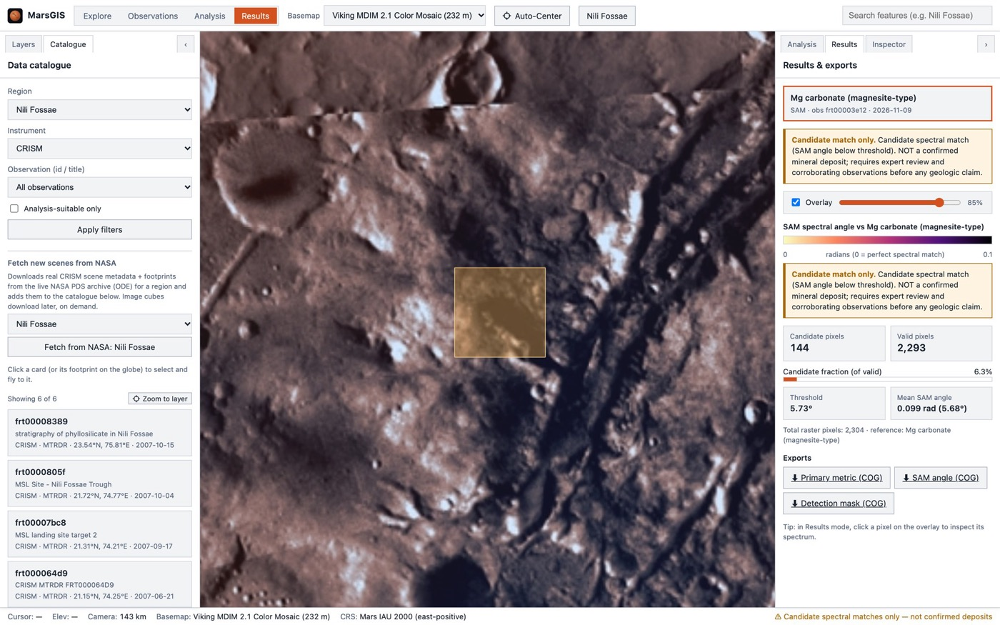

mars-globe
A real 3D Mars globe for your web app, in one line. The planet behind this text is the package.
npm install mars-globe cesiumimport { createMarsGlobe } from 'mars-globe'; createMarsGlobe('map', { defaultBasemap: 'viking' });
Mars data is hard to reach
- 1Locked in archives. NASA's CRISM images sit in the Planetary Data System. One scene has 489 spectral bands for every pixel.
- 2Desktop-only tools. Mineral mapping usually means desktop software, scripts and manual reprojection.
- 3Web maps assume Earth. CesiumJS starts with the Earth, its atmosphere and an Ion token. Setting it up for Mars is fiddly.
From NASA archive to mineral map, in the browser
The globe is now over Nili Fossae, one of the most studied mineral regions on Mars. The orange box is a real CRISM observation, frt00003e12.
- 1Find a scene in the catalogue, or fetch new ones live from NASA's ODE archive.
- 2Choose a reference mineral: olivine, carbonate or clay.
- 3Run SAM, the Spectral Angle Mapper, on every pixel.
- 4View the result as map tiles, then export COG files with a provenance record.
The MarsGIS workspace

SAM finds candidate spectral matches, not confirmed deposits. Every result says so and keeps the raw angle map next to the mask.
Tested on real Mars data
On the real CRISM scene, MarsGIS passed three checks against published geology (Ehlmann et al. 2008, Mustard et al. 2009): carbonate is patchy, not everywhere; no mineral wins every pixel; olivine is broader than carbonate.
On the synthetic test cube, carbonate and olivine were found with precision, recall and IoU of 1.0.
Every layer lines up
MarsGIS uses the official IAU 2000 Mars system and NASA Trek's 2 × 1 geographic tile grid everywhere. Basemaps, results, footprints and clicks align with no reprojection.
We checked it against live NASA tiles at the four pins on the globe: Jezero, Gale, Olympus Mons and Nili Fossae. All four returned HTTP 200 and the maths passed.
Chosen to stay simple
Frontend: React 19, TypeScript and Vite, with one persistent CesiumJS viewer. The browser never does raster maths.
Backend: Python 3.12 and FastAPI, because GDAL, rasterio and the spectral tools live in Python. rio-tiler turns results into map tiles on a Mars grid.
Engine: vectorised numpy SAM that writes Cloud Optimized GeoTIFFs plus provenance.json.
Add Mars to your app in one line
The globe on this page is mars-globe, the package I extracted from MarsGIS. It sets up the Mars ellipsoid, NASA Trek basemaps and tiling for you. No Ion token, zero dependencies, typed, 5 kB standalone.
npm install mars-globe cesiumimport { createMarsGlobe } from 'mars-globe'; const globe = createMarsGlobe('map', { defaultBasemap: 'viking', }); globe.setBasemap('mola');
<!-- after Cesium.js --> <script src="https://cdn.jsdelivr.net/npm/mars-globe@1/dist/mars-globe.min.js"></script> <mars-globe basemap="themis" style="width:100%;height:480px"></mars-globe>
import { Viewer } from 'cesium'; import { installMarsEllipsoid, setupMarsGlobe } from 'mars-globe'; installMarsEllipsoid(); // before the Viewer const viewer = new Viewer('app'); setupMarsGlobe(viewer, { basemap: 'viking' });
Four NASA maps. Try them.
Click one: the globe behind this text switches, the same way globe.setBasemap(id) does in your app.
The whole of MarsGIS in one container
The release image on GitHub Container Registry holds the web app, the API, the SAM engine and a sample cube, for a quick demo on Intel or ARM. In production, MarsGIS runs on PostgreSQL + PostGIS.
# start MarsGIS docker run -d -p 8080:8080 \ -v marsgis-data:/data \ ghcr.io/aaron43210/marsgis:latest # open http://localhost:8080 curl localhost:8080/api/health
Build something on Mars
One install, and your app has the real Mars.
npm install mars-globe cesium